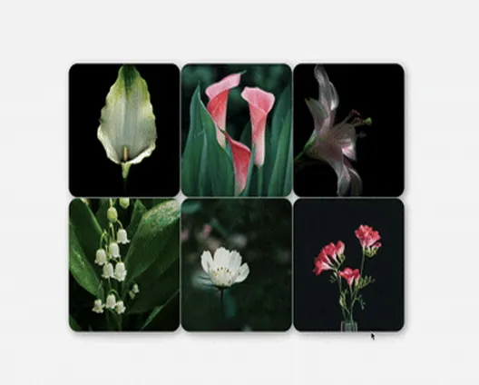

Hi I’m Ahhyun
Call me LIa :)
Working flexibly across branding, interaction, and design engineering, I adapt my tools and methods to solve the problem at hand. From developing graphic concepts to prototyping with code, I bridge visual sensibility and technical logic to craft digital experiences that feel natural to users.
My Colleagues Say...
Despite facing many unfamiliar tasks, she demonstrates remarkable initiative and executes quickly without hesitation.
Even as a junior team member, she quickly understands the company's goals and challenges, proposes constructive solutions, and actively shares her ideas with colleagues to foster collective growth.
Even during the busiest moments, she always greets everyone with a warm smile and brings positive energy to the team. Her approachable nature makes communication effortless, and working with her always feels reassuring and supportive.
Thank you for always communicating so promptly and thoughtfully. Your support has been incredibly helpful in preparing for our shoots!
Careers

- Framer Market2026
- Uniquegood Company2025-2026
- RocklyAlive2024-2025
- Korea Broadcast Art Center2024-2025
- Freelancer illustrator2023-2024
- Graphic Tshirt Brand2023
- F&F MLB(Korea Fashion Marketing)2022-2023
- Luxury Fashion Grapic2022
- Ever&Ever2021
- Konkuk University Graduation2021